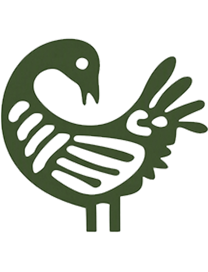
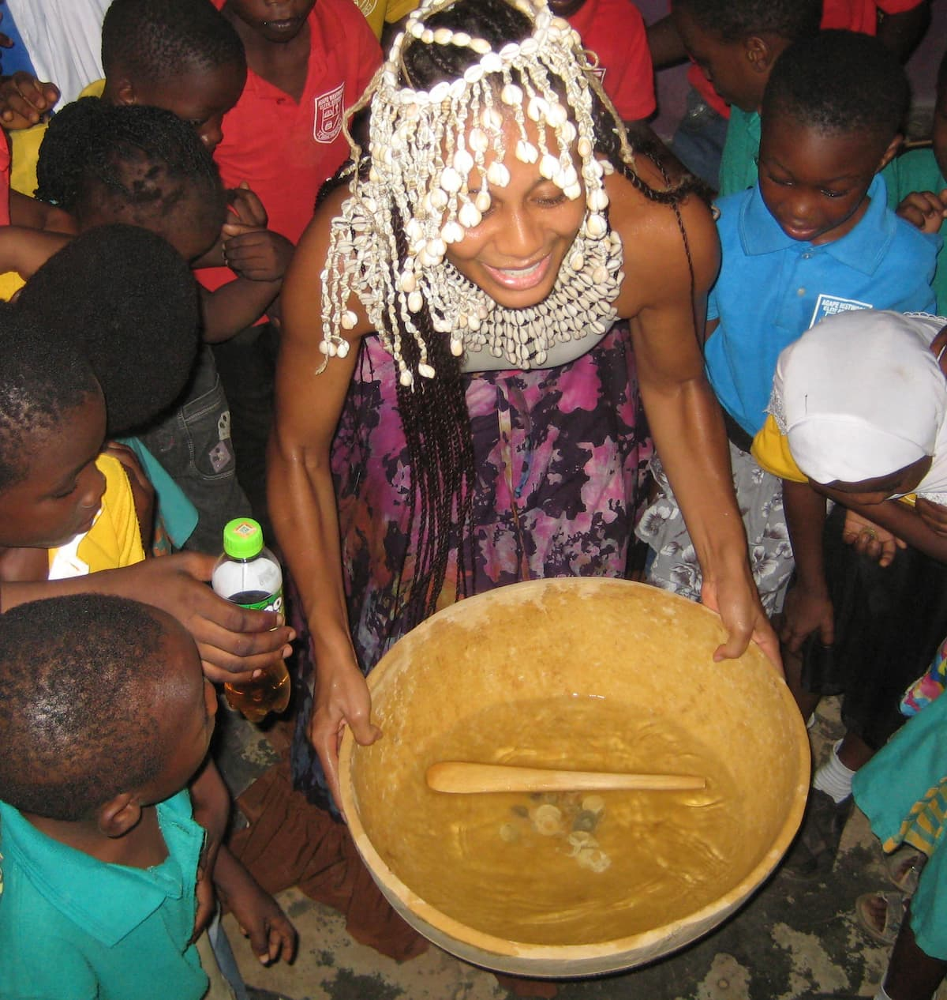
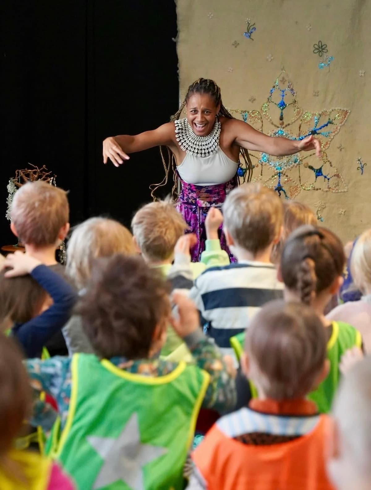

SANKOFA ry
Olemme yhdistys, jonka tavoitteena on luoda lapsille ja nuorille Suomessa ja Ghanassa merkityksellisiä, taiteeseen ja kulttuuriin pohjautuvia elinikäisiä muistoja.
Visionamme on tulevaisuus, jossa jokaisella nuorella on mahdollisuus kasvaa täyteen potentiaaliinsa, hyödyntää ainutlaatuisia vahvuuksiaan sekä kokea tulevansa nähdyksi, arvostetuksi ja yhteisönsä tukemaksi.
Toimintamme rakentuu kahden pääalueen ympärille: esittävän taiteen tuotantojen luomisen ja esittämisen sekä sellaisten yhteisöllisten hankkeiden ja tapahtumien kehittämisen, jotka tuovat ihmisiä yhteen taiteen, kulttuurin ja jaettujen kokemusten kautta.

Kuvaaja Wanda Holopainen

Kuvaaja Amanda Samelin